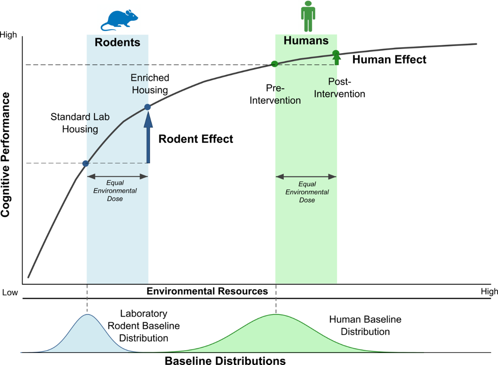
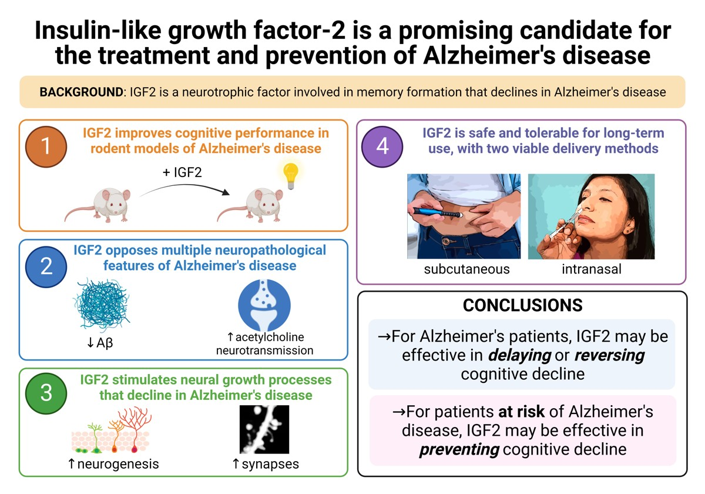
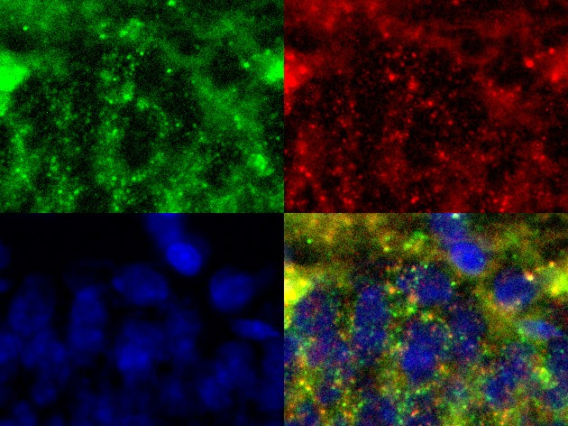

Research
Fifteen years of work across preclinical neuroscience and quantitative evidence synthesis.
Doctoral Research
University at Albany, SUNY · Stellar Lab · 2016-2026
My doctoral work had two parts: a preclinical neuroscience study on IGF-2 and cognition in early Alzheimer's disease, and a quantitative synthesis of how well cognitive findings translate across species.
Evidence Synthesis
A Cross-Species Meta-Analysis of Enrichment & Cognition Enrichment reliably sharpens cognition in lab rodents, but comparable interventions in people (cognitive training, exercise) seem to do much less. My dissertation measured that gap across species, dug into what drives it, and asked what it means for translational research. Doctoral dissertation · Manuscript in preparation

Environmental enrichment (access to rich, complex surroundings) reliably improves how laboratory rodents perform on cognitive tasks. Run the same kind of intervention in people, though, and the benefit is much smaller. That discrepancy matters, because taking the rodent results at face value sets unrealistic expectations for what cognitive interventions can do in humans.
After a systematic search of the literature, I used meta-analytic methods to put the rodent and human effect sizes side by side. Rodents showed medium-to-large effects (g = 0.44); humans showed small ones (g = 0.16). That's a 2.6-fold gap --a concrete benchmark for discounting rodent effect sizes when you're planning a human intervention.
I weighed several explanations. The best-supported and most tractable explanation is a plain gap in baseline conditions between the species: resource mismatch. Standard lab housing is so impoverished next to an ordinary human life that "enrichment" mostly means relief from deprivation, which leaves rodents far more room to improve than people have. It's a case study in how a quiet methodological choice can bias results and distort how we read translational research.
Methods: multi-database systematic search, multilevel effect-size modeling with variance correction, heterogeneity and publication-bias analysis, and cross-species comparison in R (metafor).
Preclinical Alzheimer's & Cognition
Intranasal IGF-2 in a Diet-Induced Model of Early Alzheimer's Can intranasal IGF-2 protect cognition in a diet-induced rat model of early Alzheimer's --and which receptor does the work? Manuscript in preparation

I modeled the early stages of sporadic Alzheimer's by maintaining rats on a long-term high-fat, high-sugar diet, which produces obesity, brain insulin resistance, and the soluble amyloid-beta oligomers characteristic of early disease, a more translationally faithful model than transgenic familial-AD mice.
I then tested whether IGF-2 (a neurotrophic factor that both promotes amyloid clearance and potentiates insulin signaling) could blunt the resulting cognitive decline when delivered intranasally, a route I chose because it can plausibly translate to patients. Cognition was assessed with a battery of spatial memory tests; mechanism was probed with primary hippocampal culture, glucose-uptake assays, receptor blockade, Western blot, and immunocytochemistry, with particular attention to which of the three receptors (insulin receptor, IGF1R, IGF2R) mediates IGF-2's effects.
The program also produced a first-author review in CNS Neuroscience & Therapeutics laying out the therapeutic and preventive case for IGF-2 in Alzheimer's disease (on my CV).
An Immunohistochemical Marker of IGF2R Activation Lots of evidence says the IGF2 receptor matters, yet no one could see when it's actually switched on. I built a way to. Presented at a regional symposium (2022) · Preprint in preparation

IGF2R activation is thought to be central to IGF-2's effects in the brain, but the field had no reliable way to detect when the receptor is actually engaged and internalized. I set out to build one: an immunohistochemical marker of IGF2R binding and translocation.
The key was a phospho-IGF2R antibody. I didn't create it; it came from an obscure source the field had almost entirely overlooked. But its phospho-specificity is exactly what makes it useful, since it reports the activated receptor rather than just its presence. Used in a colocalization study, it let me visualize IGF2R activation directly in tissue, filling a real gap in a mechanism that many lines of evidence suggest is important.
Does Hippocampal Insulin Really Drive Memory? A prior claim that intrahippocampal insulin enhances memory didn't hold up under tighter methods --I found no effect. Presented at SfN 2018 · Preprint in preparation
An influential line of work had reported that insulin acting directly in the hippocampus enhances memory. I tried repeatedly to replicate those findings using gold-standard methods (careful intrahippocampal infusions and well-controlled behavioral assays) and could not reproduce them. Across spatial navigation and the encoding and retrieval of contextual fear memory, I found no effect of hippocampal insulin.
Null results like this matter: they keep the field from building on effects that may not be real. Presented at the Society for Neuroscience Annual Meeting (2018).
Is the Rodent mPFC Required for Attentional Set-Shifting? In humans, shifting between rules needs the prefrontal cortex. Does the rat's supposed equivalent work the same way? I tested it --and it didn't. Preprint in preparation
The rodent medial prefrontal cortex (mPFC) is often treated as the equivalent of the human prefrontal cortex, but that homology is genuinely controversial. In humans, attentional set-shifting (a test of cognitive flexibility) depends on prefrontal activity, so I asked whether the same holds in rats. I temporarily inactivated the mPFC with intra-mPFC lidocaine during a set-shifting task, and performance was unaffected.
The result corroborates the skeptics: whatever the rodent mPFC does, it isn't a simple stand-in for the human region on this kind of executive task, a caution worth keeping in mind whenever rodent prefrontal findings are read as models of human cognition.
A Method for Intranasal Drug Delivery in Awake Rats Intranasal dosing is the ideal route for brain drugs in people but notoriously hard in rats --so I built a method that works in awake animals. SOP adopted lab-wide
Intranasal administration delivers drugs to the brain while bypassing the blood-brain barrier, which makes it an appealing route for neurotherapeutics in humans, but it's difficult to do cleanly in rats without the confounds of anesthesia. I developed and documented a standard operating procedure for intranasal delivery in awake rats, built around graded habituation and operant shaping (food-reward training to a soft cone restraint).
The method reflects something I care about deeply: good animal welfare and good science are the same project. Reliable, low-stress dosing meant genuinely understanding rat behavior: how they learn, what frightens them, and how to habituate them patiently enough that the procedure becomes routine rather than distressing. That care shows up in the data as much as in the animals' well-being.
Breaking AGEs to Rescue Bone & Brain in Diabetes (RPI Collaboration) A cross-institution study of whether an AGE-cleaving drug can rescue both cognition and bone strength in diabetic rats. Collaboration with Rensselaer Polytechnic Institute
Type-2 diabetes raises fracture risk even when bone density looks normal, partly through advanced glycation end-products (AGEs) that stiffen the bone matrix, and the same metabolic disease drives cognitive decline. In collaboration with the Vashishth lab at Rensselaer Polytechnic Institute, I helped test whether phenacylthiazolium chloride (PTC), a compound that cleaves AGEs, could rescue skeletal fragility in a diet-induced diabetic rat model, while we assessed effects on cognition.
The project sits at an intersection I keep returning to: the link between physical frailty and Alzheimer's disease. Bone, muscle, and brain decline together in aging, and I'm especially interested in how physical activity and exercise (and the signaling molecules they release) might help prevent AD. Testing a single intervention against both skeletal and cognitive fragility treats that decline as the connected problem it really is.
Earlier Research
Cold Spring Harbor Laboratory · Osten Lab · 2011-2016
I spent five years in Pavel Osten's lab at Cold Spring Harbor. I started as an assistant researcher and worked my way up to lab manager. At a certain point my technician and lab-management duties (running the animal colony, procurement, and budgets, and training junior staff) eclipsed my involvement in hands-on research.
Brain-Wide Mapping of GABAergic Interneurons Mapping three major classes of inhibitory interneuron across the entire mouse brain, at single-cell resolution. Published in Cell (Kim et al. 2017)
Using serial two-photon tomography (whole-brain imaging at single-cell resolution), our group mapped three classes of GABAergic interneuron (PV, SST, VIP) across the entire mouse brain, both within regions and across development. The work revealed stereotyped, cell-type-based cortical architecture and subcortical sexual dimorphism, and was published in Cell (Kim et al. 2017), on which I'm a contributing author. I handled the immunolabeling validation behind the cell-type identification.
The CNTNAP2 Autism Model Tracing how an autism-linked mutation reshapes activity in social-brain circuits.
I worked on the Cntnap2 knockout, a mouse model of autism, characterizing its social behavior and using c-fos mapping to compare brain activation between knockout and wild-type animals. I also traced the afferent and efferent projections of the infralimbic cortex using stereotactically injected viral vectors, to place the social-behavior phenotype in a circuit context.
CUNY Graduate Center · Bodnar Lab · 2009-2011
Reward-Based Learning & Conditioned Flavor Preference Where I first got into neuroscience: how dopamine and opioid systems build learned food preferences.
I studied how dopamine and opioid systems drive reward-based learning, using conditioned flavor-preference paradigms in BALB/c and SWR mice and running c-fos immunohistochemistry to map activation across reward circuitry (prefrontal cortex, nucleus accumbens, amygdala, VTA).
Research Interests
- Translational validity: why preclinical findings fail to translate, and how to build models that predict better
- Meta-analysis & research reproducibility: quantitative synthesis across studies, heterogeneity and publication bias, and finding and fixing the methodological choices that undermine rigor
- Neurotrophic factors & exerkines: IGF-2, BDNF, exercise-released signaling molecules, and their roles in cognition and neurodegeneration
- Alzheimer's disease: preventive and therapeutic interventions, early biomarkers, and metabolic and lifestyle contributions
- Neural circuitry: GABAergic interneuron architecture, social-brain circuits, autism models
- Research technology & ground-truth datasets: building tools and reference datasets that accelerate discovery across an entire field